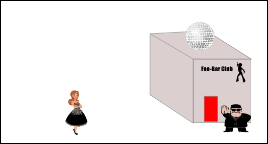
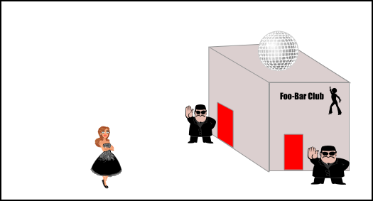
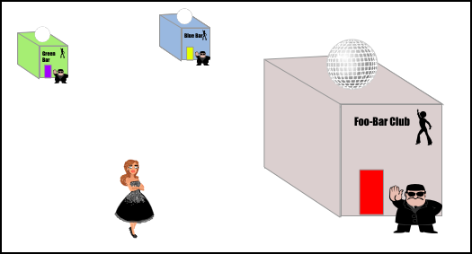

JWT or Sessions, which one should you choose?
Preface
Building a webapp with a user-login flow can be implemented via different mechanisms. These mechanisms can vary greatly, both in features and in architectural structures. This post will try to outline the inherent differences between two popular common choices: JWT (JSON Web Tokens) and sessions. Even though this discussion can be generalised at times to a discussion about "Authorisation vs Authentication", it will steer away from the latter and focus on JWT and sessions. The description of how these solutions work is out of scope, but there are plenty of sources for each of these solutions.
The nightclub analogy
Instead of discussing about different types of login mechanisms, let's first use a nightclub analogy.
Consider you own and operate a nightclub and there's an upcoming private party. For this party, invited guests are entering, leaving, and re-entering. By which mechanism should the doormen grant access to these invited people? Let's consider two options:
The wrist band
Initial entry: A Guest shows his driver's license. He is initially verified against a guest list, if he is on it, then he gets a wrist band and is allowed entry.
Re-entry: A guest shows only his wrist band. The doormen have a wrist band reader, which allows them to quickly verify whether the wrist band is valid.
The continuous guest list check
Initial entry: A Guest shows his driver's license. He is initially verified against a guest list, if he is on it, then he is allowed entry.
Re-entry: Same process as initial entry- each entry requires the guest to be verified against a guest list. To make this flow more analogous to a webapp login flow, let's imagine that the first entry results in a custom venue ID with a random value. This ID is then used with subsequent visits, thus replacing the driver's license. Note that with both types of entry and ID, verification against a guest list is required.
Let's see how these mechanisms perform in different nightclub setups:
The base case nightclub
This setup has just one nightclub with one single entrance. Both the "wrist band" mechanism and the "continuous guest list check" mechanism perform well.
The multi-entrance nightclub
This setup has one nightclub but with more than one entrance. The "wrist band" mechanism works the same as in the single entrance setup. As long as the doormen at each entrance posses the same wrist band reader for verification, it works well. On the other hand, the "continuous guest list check" mechanism faces a challenge - How can the doormen at difference entrances share a single, probably dynamic, guest list? Some possible solutions:
- Each entrance maintains a separate guest list. Each invite should contain information to guide the guest to which entrance they should enter. Re-entry is also required through the same entrance.
- Place the guest list in a central location. All entrance doormen need to make a quick run to check it for each guest.
The nightclub that's part of a festival
This setup has several nightclubs, all cooperating in a specific time frame to form a festival. The "wrist band" mechanism works the same as in the single entrance setup. As long as the doormen at each nightclub posses the same wrist band reader for verification, it works well. On the other hand, the "continuous guest list check" mechanism arguably cannot work any more. The two solutions proposed for the multi-entrance nightclub will not suffice under this setup: A central location for a guest list is not practical to keep referring to due to distance, and otherwise splitting up the lists will not let festival attendees visit more than a single venue.
Tradeoffs
We have seen wrist bands can be more flexible to fit in distributed setups, but there are some other tradeoffs to consider when choosing to go with the wrist band mechanism:
Central point of failure
The wrist band machine that creates the bands posses a secret. If this secret is compromised and ends up in malicious hands, some uninvited guests can create a counterfeit valid band and be granted entry.
Banning guests
Consider you are interested in kicking out a misbehaving guest and then banning them from re-entry. If while kicking them out you are able to confiscate away their wrist band, then the problem is solved. However, what if the guest was able to get away with the wrist band still on? To block them from re-entry, it would require doormen to maintain a "black list" and for them to refer to it upon each re-entry. While this does work, maintaining and working with a "black list" has effectively all the properties of maintaining and working with a white list, which is exactly how the "continuous guest list check" mechanism works. If the doormen need to refer to a list, of any type, for each re-entry, the wrist band becomes redundant.
The analogy source
Back to the engineering world, JWT are wrist bands, while sessions are just a guest list that is continuously being referred to.
- If a server with a session mechanism has multiple instances (multi-entrance), we can either put the sessions in a central session store (central guest list), or implement sticky-sessions (re-entry is required through the same entrance).
- A JWT's secret for the signature part is a central point of failure. If it is compromised, all accounts are at risk.
- The JWT mechanism does not cope well with invalidating (banning) tokens. A blacklist is required, and it is advised to keep the expiration time of JWT low.
Conclusion
JWT and sessions each have tradeoffs, which should all be considered when choosing the tool for the job. JWT seem to be a popular choice, but is it always justified? Their straightforward implementation might be appealing when hacking a quick application, similar in some ways to why people might prefer to work with NoSQL databases in the same quick-n-dirty context.
When taking the time to architect a webapp, sessions should be considered. In particular, if you are thinking about using JWT with an hmac algorithm, you should ask yourself - can your application use sessions instead?
Often, JWT receive the "scaling" argument to their favor. Are JWT easier to scale? Yes! But will that ever be an issue? In my honest opnion - no! The most scale-heavy web applications are using sessions successfully, e.g. Gmail and the rest of G-suite applications. If your webapp becomes Google-scale, then you'll also have excellent engineers by your side who will squeeze out and optimize the performance of a session-based architecture.
Sessions go well with cookies. Cookies, however, can act as a double-edged swords. In a future post I will elaborate more on this subject. As long as you understand how CSRF exploits work and follow owasp recommendations for a double layer protection, you are safe. Hopefully you can make use of a framework that has these protection layers built-in.